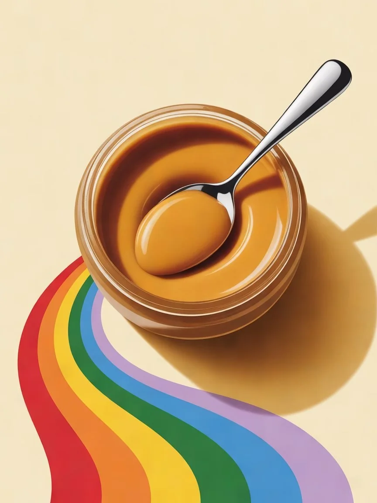

Пресно, не хватает глубины
Варишь курицу час, а бульон бледный. Добавляешь соль, ещё соль — и понимаешь, что дело не в соли. Продукты действительно изменились: курица растёт сорок дней вместо полугода, овощи зреют в теплице.
Продукт для розничных сетей и маркетплейсов
Настоящий вкус без синтетики
Паста, рождающая вкус. С витамином B12. Одна чайная ложка на блюдо — и еда становится насыщенной, глубокой, с долгим послевкусием.

Проблема покупателя
Три причины, по которым человек уходит с полки недовольным. Все три мы закрываем одной банкой.
Варишь курицу час, а бульон бледный. Добавляешь соль, ещё соль — и понимаешь, что дело не в соли. Продукты действительно изменились: курица растёт сорок дней вместо полугода, овощи зреют в теплице.
В овощах, крупах и бобах витамина B12 нет вообще — ни в одном. Веганы и постящиеся знают это и покупают витамин отдельно, каждый месяц.
Усилители вкуса и ароматизаторы — то, чего покупатель сознательно избегает. Но без них еда часто выходит пустой, и человек оказывается между пресным и синтетическим.
Решение
Паста не создаёт вкус с нуля — она усиливает тот, что уже есть в продуктах. Поэтому эффект тем заметнее, чем «настоящее» варится бульон.
Пищевая паста в стеклянной банке. Одна чайная ложка с горкой на блюдо объемом 3–4 литра — кладётся вместе с солью. Соль паста не заменяет.
Дрожжевые экстракты трёх видов — каждый со своей задачей: тело и глубина, яркость, полнота и длинное послевкусие. Плюс вода, соль, овощной концентрат, специи и витамин B12.
Отдаёт блюду то, чего ему не хватает: глубину, полноту во рту и послевкусие, которое держится. И закрывает суточную потребность в B12 на четверть с одной ложки.
Преимущества
Кому подходит SMAK
Готовите из магазинной курицы и мяса, которые потеряли вкус? SMAK возвращает насыщенность и глубину — одна ложка на блюдо, и бульон снова настоящий.
Умами в овощных блюдах + витамин B12, которого критически не хватает в растительном рационе. Четверть суточной нормы с одной ложки.
Натуральный состав без синтетики. Усилитель вкуса, который не пугает этикеткой — только растительные ингредиенты и витамины.
Бульон становится глубоким, как будто варился втрое дольше. Полнота во рту и послевкусие, которое держится.
Четверть суточной нормы с одной ложки. Тот самый витамин, который веганы обычно покупают отдельно.
Шесть понятных составляющих. Без добавления усилителей вкуса, без ароматизаторов и красителей.
Ничего животного — ни в составе, ни в производстве. Умами без мяса и полнота без жира.
Супы, бульоны, соусы, вторые блюда, маринады, растительные аналоги мяса. Одна банка на всю кухню.
Банки хватает на 16–20 обедов. Расход предсказуем, повторная покупка редкая, а возврат — стабильный.
Состав
Шесть составляющих, которые покупатель может прочитать до конца и не искать расшифровку в интернете.
Витамин B12 в диаграмме не показан сектором: его доля — миллионные доли процента. Так и должно быть — витамина нужны микрограммы, а не граммы.
Рынок
Продукты с чистым составом растут все пять лет и обгоняют растительный сегмент. Покупатель голосует за понятную этикетку — и готов платить за неё.
Данные демонстрационные, приведены для иллюстрации динамики. Перед публикацией заменяются на отраслевые источники.
Витамин B12
B12 — единственный нутриент, которого веганской диете действительно не хватает. В растительных продуктах его нет ни в одном. Мы закрываем этот разрыв ложкой пасты.
Как использовать
Главное правило: одна чайная ложка с горкой на блюдо объемом 3–4 литра. Кладёте вместе с солью и готовите как обычно.
Ложка на блюдо. Борщ, щи, куриный, овощной, грибной — вкус глубже, суп сытнее.
1 ложка на 3–4 лЗдесь эффект заметнее всего: слабый бульон из магазинной курицы догоняет деревенский.
1 ложка на 3–4 лСоус перестаёт быть жидким по вкусу — становится плотным и долгим.
половина ложки на сотейникТушёное мясо, гуляш, рагу, овощные блюда. Добавляет глубину и убирает «пустоту».
1 ложка на 1 кгМясо и овощи набирают вкус не только с поверхности, а по всему объёму.
половина ложки на литрДаёт то, чего аналогам не хватает: умами без животного и полноту без животного жира.
1 ложка на 1 кгДля сетей и маркетплейсов
Плоская форма устойчива на полке и хорошо смотрится в карточке товара. Сплошная этикетка закрывает стекло целиком и защищает витамин B12 от света.
Срок годности и условия поставки уточняются под конкретную площадку и объём партии.
Попробуйте первое блюдо. Вы заметите разницу с первого глотка и по послевкусию, которое останется.